Установка, покупка ключа и работа с AI в Windsurf и Cursor
Эта инструкция ведёт по полному пользовательскому пути: получить расширение, установить его, активировать ключ, понять где писать ответ AI, где отправлять дополнение или комментарий, как работать с вкладками панели и как обратиться в поддержку.
Если вы используете Windsurf, здесь также описан режим аккаунтов. Если вы используете Cursor, установка и работа с диалогами такие же, но блок аккаунтов там скрыт.
1. Что нужно перед стартом
Перед установкой подготовьте несколько вещей, чтобы весь сценарий прошёл без пауз.
2. Как установить расширение
Шаг 1. Получите VSIX в боте
- Откройте @niuma_local_bot.
- Если у вас уже есть действующий ключ, зайдите в 🔑 Мои ключи.
- Нажмите кнопку 📦 Скачать расширение.
- Бот отправит файл расширения в формате
.vsix.
Шаг 2. Установка в Windsurf
.vsix.
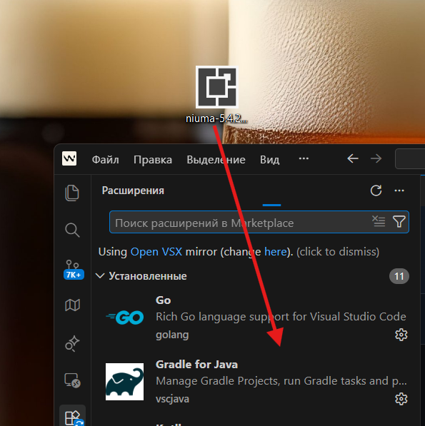
Шаг 3. Установка в Cursor
Сценарий почти такой же:
- Откройте раздел расширений.
- Выберите установку из
.vsix. - Укажите файл Niuma, скачанный из Telegram-бота.
- После установки откройте боковую панель Niuma.
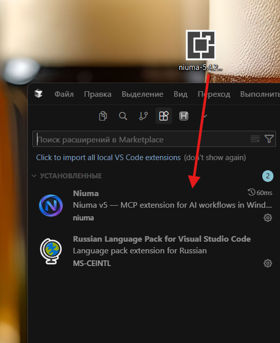
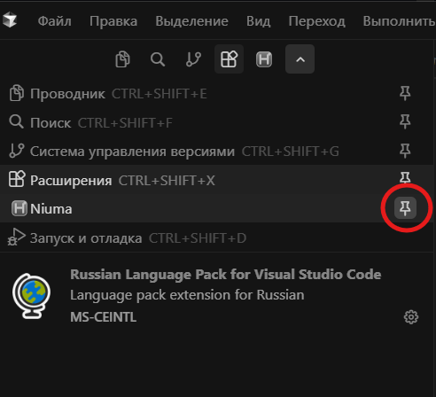
3. Как получить или купить ключ
Пробный ключ
- В боте нажмите 🛒 Купить.
- Выберите 🆓 Пробный — 3 дня.
- Бот сразу выдаст ключ и следующим сообщением отправит расширение.
Платный ключ
- Нажмите 🛒 Купить.
- Выберите 💳 Месячный или 💎 Постоянный.
- Бот покажет заказ и кнопку 💳 Открыть оплату.
- Оплата откроется внутри Telegram Web App.
- После оплаты ключ обычно приходит автоматически.
- Если нужно, используйте 🔄 Проверить статус.
4. Как активировать ключ и подготовить панель
- Откройте боковую панель Niuma в IDE.
- Перейдите на вкладку Настройки.
- В поле активации вставьте ключ вида
NIUMA-XXXX-XXXX-XXXX-XXXX. - Нажмите Активировать.
После успешной активации расширение подтвердит лицензию, покажет тариф и срок действия, а затем откроет доступ к рабочим разделам.
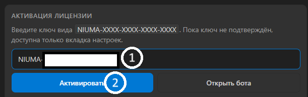
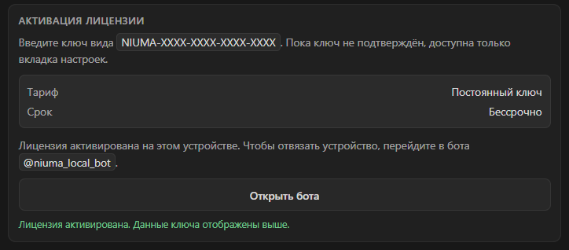
| Вкладка | Для чего нужна |
|---|---|
| Нюма | Статус MCP, очередь ожидания, кнопка Дополнение / Комментарий, статистика, история, project rules. |
| Аккаунты | Добавление аккаунтов Windsurf, переключение, просмотр кредитов. Доступно только в режиме Windsurf. |
| Настройки | Активация лицензии, ссылка в бот, включение правил проекта, режим IDE, язык, проверка обновлений. |
Проверьте, что MCP-сервер Niuma включён
Если диалог Niuma не появляется, убедитесь, что сервер niuma-local включён в настройках MCP вашего редактора.
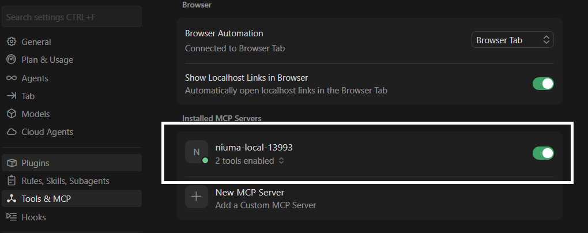
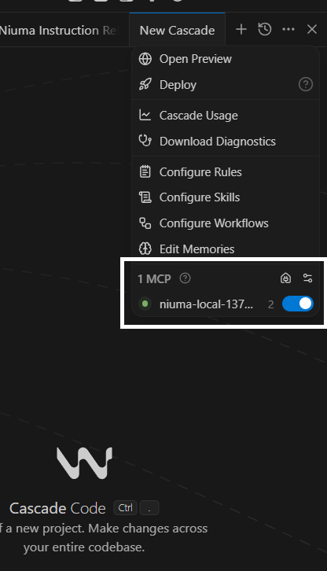
5. Где писать ответ AI, а где дополнение / комментарий
Это два разных сценария. Важно их не смешивать.
Сценарий A. Ответ в диалоге AI
- AI показывает результат работы через диалог Niuma.
- В открывшемся окне вы даёте ответ на текущий шаг: подтверждение, правку, уточнение или завершение.
- Если нужно, туда же можно приложить файлы и изображения.
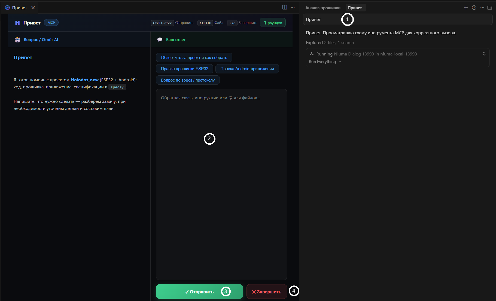
Сценарий B. Дополнение / Комментарий по ходу работы
- Откройте вкладку Нюма.
- Нажмите кнопку 📝 Дополнение / Комментарий.
- Или используйте горячую клавишу
Ctrl+Shift+N. - Введите новую задачу, уточнение или корректировку.
- AI получит это как дополнение при следующем рабочем цикле.
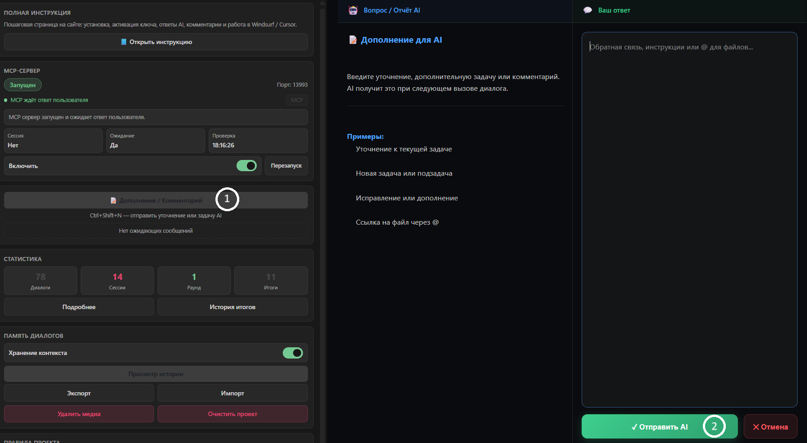
Что ещё находится во вкладке «Нюма»
- MCP-сервер. Показывает состояние подключения и порт.
- Очередь ожидания. Здесь видно, есть ли ожидающие пользовательские дополнения.
- История и экспорт. Можно открыть историю, экспортировать или импортировать её.
- Project Rules. Локальные правила проекта, которые Niuma добавляет в работу AI.
Итоги, история итогов и просмотр истории
- Когда рабочий цикл завершается, Niuma показывает окно Итог сессии.
- В этом окне кратко перечисляется, что было сделано, какие файлы затронуты и что осталось проверить или доделать.
- Итог сохраняется в историю, поэтому к нему можно вернуться позже.
- Во вкладке Нюма кнопка История итогов открывает список сохранённых итогов.
- Кнопка Просмотр истории нужна для просмотра общей истории диалогов и контекста.
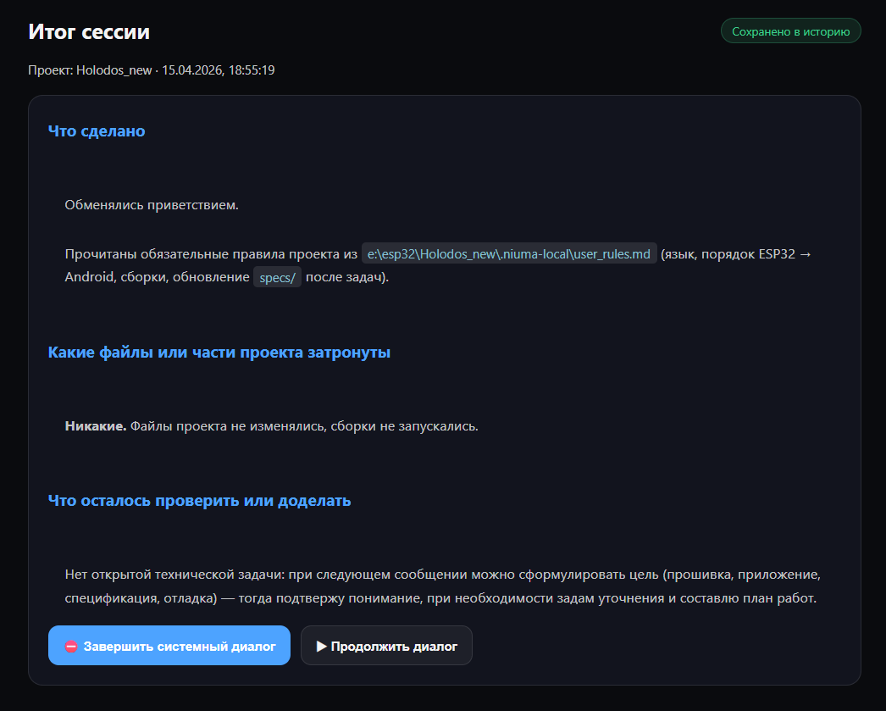
Как работать с Project Rules
- Во вкладке Нюма найдите блок Правила проекта.
- Запишите туда ваши обязательные правила работы.
- Нажмите Сохранить правила.
Эти правила хранятся локально в .niuma-local/user_rules.md внутри проекта и помогают не повторять одни и те же требования в каждом сообщении.
6. Как добавить аккаунты Windsurf
Этот раздел нужен только пользователям Windsurf. В Cursor вкладка аккаунтов скрыта.
- Перейдите во вкладку Настройки.
- Убедитесь, что выбран режим IDE Windsurf или Auto, если он корректно определился.
- Включите Режим аккаунтов, если он ещё отключён.
- Откройте вкладку Аккаунты.
- Вставьте список аккаунтов в поле добавления, каждый на новой строке.
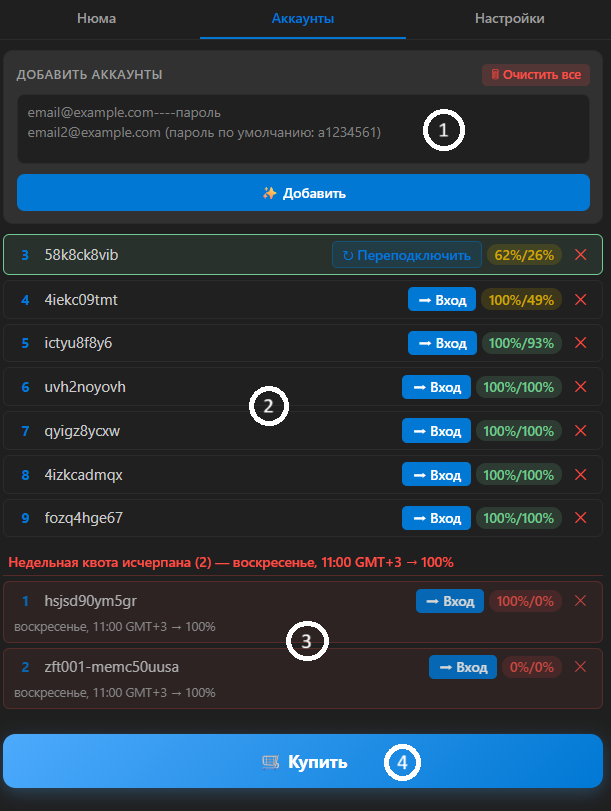
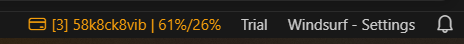
email@example.com----пароль. Если у некоторых аккаунтов используется пароль по умолчанию, его тоже нужно указать в соответствующей строке.Что вы увидите после добавления
- список аккаунтов
- текущий активный аккаунт
- остаток кредитов
- кнопки входа, переподключения и удаления
7. Где смотреть ключи, как скачать расширение ещё раз, обновить его и как отвязать устройство
Раздел «Мои ключи» в боте
- Откройте 🔑 Мои ключи.
- Бот покажет все ваши ключи, срок действия и привязанное устройство.
- Если у вас есть действующий ключ, появится кнопка 📦 Скачать расширение.
- В этом же разделе отображается актуальная версия расширения.
Когда использовать повторное скачивание
- если вы переустановили IDE
- если потеряли файл
.vsix - если хотите заново установить актуальную версию
Как обновить расширение
- Откройте 🔑 Мои ключи.
- Посмотрите, появилась ли там обновлённая версия расширения.
- Нажмите 📦 Скачать расширение и получите новый
.vsix. - Установите его в IDE повторно через Install from VSIX.
Как отвязать устройство
- Откройте 🔑 Мои ключи.
- Нажмите 🔓 Отвязать устройство.
- Выберите нужный ключ.
После отвязки ключ можно активировать на другом устройстве заново.
Как удалить нерабочий ключ
- Откройте 🔑 Мои ключи.
- Нажмите 🗑 Удалить нерабочий ключ.
- Выберите ключ, который уже неактивен и не нужен в списке.
8. Как написать в поддержку и как отвечать в тикете
Первое сообщение в поддержку
- В главном меню бота нажмите 💬 Поддержка.
- Отправьте сообщение одним сообщением.
- При необходимости приложите фото или документ.
После отправки бот подтвердит, что сообщение ушло в поддержку. Когда администратор ответит, ответ придёт в этот же бот.
Как отвечать дальше в уже открытом тикете
- Когда по вашему тикету уже есть активный диалог, используйте кнопку 💬 Ответить.
- Если вопрос решён, нажмите ✅ Закрыть тикет.
| Кнопка | Когда использовать |
|---|---|
| 💬 Поддержка | Чтобы начать новый вопрос или обращение. |
| 💬 Ответить | Чтобы продолжить уже открытый тикет и ответить по существующему диалогу. |
| ✅ Закрыть тикет | Когда вопрос решён и дальнейшие ответы не нужны. |
9. Возможные проблемы
Ctrl+Shift+N.